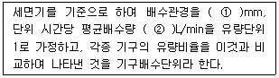
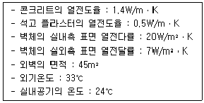
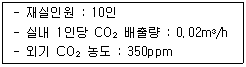
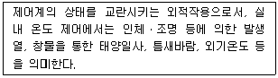
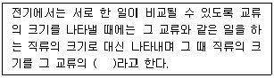
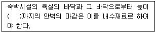

건축설비기사 (2013-06-02 기출문제)
1과목: 건축일반
1. 주택평면을 계획할 경우에 계획방법이 옳지 않은 것은?
- 시간적 요소가 같은 것끼리 서로 격리시킨다.
- 유사한 요소의 것은 공용하도록 한다.
- 구성원 본위가 유사한 것은 서로 접근시킨다.
- 상호간 요소가 서로 상반된 것은 서로 격리시킨다.
(정답률: 83%)

2. 건조공기 1kh을 포함한 습공기 중의 수증기량을 의미하는 것은?
- 절대습도
- 수증기 분압
- 노점온도
- 상대습도
(정답률: 60%)
3. 벽돌쌓기 방법 중 불식쌓기에 대한 설명으로 옳은 것은?
- 벽돌 1켜는 길이 쌓기, 다음켜는 마구리쌓기로서 반복되는 벽돌쌓기법이다.
- 5켜는 길이쌓기로 하고 다음 1켜는 마구리쌓기로서 반복되는 벽돌쌓기법이다.
- 매켜에 길이쌓기와 마구리쌓기가 번갈아 나타나는 벽돌 쌓기법이다.
- 보통 두께는 반장두께로서 장식적으로 구멍을 내어가며 쌓는 벽돌쌓기법이다.
(정답률: 57%)
4. 철근조의 경량형강에 대한 설명으로 옳지 않은 것은?
- 실내구조물 및 보조재로 사용된다.
- 접합에 불리하며, 국부좌굴, 뒤틀림 등이 발생한다.
- 경량이기 때문에 비교적 경제적이다.
- 단면적에 비해 단면계수를 작게 한 것이다.
(정답률: 58%)
5. 병원의 건축계획에 관한 설명 중 옳지 않은 것은?
- 수술부는 에너지 사용량이 크므로 공조 재순환이 바람직하다.
- 위생기구 손잡이를 감지식으로 한다.
- 감염으로부터 보호받아야 할 부서에 갱의실을 두고 다른 부문과는 분리시킨다.
- 종합병원의 건축군을 크게 외래부, 병동부, 부속진료부로 나눌 수 있다.
(정답률: 87%)
6. 건조공기의 조성 중 질소(N2), 산소(O2) 다음으로 많은 성분은?
- 아르곤
- 탄산가스
- 네온
- 헬륨
(정답률: 72%)
7. 목구조에서 반자틀의 구성부재가 아닌 것은?
- 달대
- 반자틀받이
- 반자돌림대
- 마룻대
(정답률: 75%)
8. 철골구조 용접에서 모재가 녹아 용착금속이 채워지지 않고 홈으로 남게 된 부분은?
- 언더컷
- 블로홀
- 오버랩
- 피트
(정답률: 78%)
9. 결로에 관한 설명 중 옳지 않은 것은?
- 결로의 발생원인은 건물의 표면오도가 접촉하고 있는 공기의 노점온도보다 높을 경우 그 표면에 발생한다.
- 표면결로 방지대책으로는 환기에 의해 실내 절대습도를 저하시키는 방법이 있다.
- 내부결로 방지대책으로 외측단열공법으로 시공하는 방법이 있다.
- 결로의 발생원인 중 하나는 불완전한 단열시공이 있다.
(정답률: 67%)
10. 오피스 랜드스케이핑(office landscaping)의 특성에 대한 설명으로 옳지 않은 것은?
- 작업흐름의 실제적 패턴에 기초를 둔다.
- 작업집단을 자유롭게 그루핑하여 규칙적인 평명을 유도한다.
- 실내에 고정 및 반고정된 칸막이를 사용하지 않는다.
- 청각적인 문제에 특별한 대책을 필요로 한다.
(정답률: 46%)
11. 주택의 동선에 대한 설명으로 옳지 않은 것은?
- 동선이 가지는 요소는 빈도, 속도, 하중이다.
- 동선은 일생생활의 움직임을 표시하는 선이다.
- 개인원, 사회권, 가사노동권의 3개 동선이 서로 분리되어야 한다.
- 가사노동의 동선은 가능한 북쪽에 오도록 하고 길게 처리한다.
(정답률: 90%)
12. 호텔건축의 조닝(zoning)에서 공간적으로 성격이 나머지 셋과 다른 하나는?
- 클로크 룸
- 보이실
- 린넨실
- 트렁크 실
(정답률: 79%)
13. 학교건축의 유닛 플랜(unit plan)에 대한 설명 중 옳은 것은?
- 편복도형은 교실간의 차음성이 양호하다.
- 중복도형은 양호한 조도 분포가 된다.
- 배터리(battery)형은 복도의 소음을 차폐해야 한다.
- 오픈플랜(open pian)형은 인공조명이 필요하다.
(정답률: 66%)
14. 연약지반의 기초에 관한 대책으로 옳지 않은 것은?
- 마찰 말뚝을 이용한다.
- 건물을 경량화 한다.
- 지하실을 설치한다.
- 건물의 길이를 길게 한다.
(정답률: 63%)
15. 열교(thermal bridge)현상에 관한 설명으로 옳지 않은 것은?
- 벽이나 바닥, 지붕 등의 건축물 부위에 단열이 연속되지 않는 부분이 있을 때 생긴다.
- 열교현상을 줄이기 위해서는 콘크리트 라멘조의 경우 가능한 한 내단열로 시공한다.
- 열교현상이 발생하는 부위는 표면온도가 낮아져서 결로가 쉽게 발생한다.
- 열교현상이 발생하면 전체 단열성이 저하된다.
(정답률: 87%)
16. 온열환경에 대한 인체의 쾌적성을 평가하는 PMV(예상온열감)를 산출하는데 필요한 요소가 아닌것은?
- 일사량
- 착의량
- 평균복사온도
- 수증기분압
(정답률: 58%)
17. 도서관에서 폐가식(closed access)에 관한 내용 중 옳지 않은 것은?
- 도서의 유지관리가 좋아 책의 망실이 적다.
- 열람자가 책을 볼 동안 감시할 필요가 있다.
- 목록에 의하여 책이 대출되므로 희망한 내용이 아닐 수 있다.
- 책을 대출받는 절차가 번잡하고 관원의 작업량이 많은 결점이 있다.
(정답률: 78%)
18. 철근콘크리트 공사 시 거푸집 사이의 간격을 일정하게 하는 기구는?
- 세퍼레이터
- 갬버
- 스페이서
- 컬럼밴드
(정답률: 65%)
19. 벽ㆍ지붕ㆍ바닥 등의 연직하중과 건물에 가하여지는 풍압력ㆍ지단력 등의 수평하중을 받는 중요벽체를 무엇이라 하는가?
- 칸막이벽
- 장막벽
- 내력벽
- 커튼월
(정답률: 85%)
20. 음에 관한 설명으로 옳은 것은?
- 발음체의 진동수와 같은 음파를 받게 되면 자기도 진동하여 음을 내는 현상을 잔향이라 한다.
- 잔향시간은 실흡음력이 클수록 길어지고, 실용적이 작을수록 짧아진다.
- 60폰의 음을 70폰으로 높이면 10폰의 증가에 의해 사람은 음의 크기가 대략 2배 커진 것으로 자각한다.
- 외부공간에서 음의 전달은 온도, 습도, 바람 등의 외부 기후조건과 무관하다.
(정답률: 57%)
2과목: 위생설비
21. 관 균등표에 의한 관경 결정시 필요 없는 것은?
- 균등수
- 유량선도
- 기구의 접속관경
- 기구의 동시사용률
(정답률: 69%)
22. 음료용 급수의 오염원인에 따른 방지대책으로 옳지 않은 것은?
- 정체수 : 적정한 탱크 용량으로 설계한다.
- 조류의 증식 : 투광성 재료로 탱크를 제작한다.
- 크로스 커넥션 : 각 계통마다의 배관을 색깔로 구분한다.
- 곤충 등의 침입 : 맨홀 및 오버플로우관의 관리를 철저히 한다.
(정답률: 82%)
23. 평균 BOD가 200ppm인 가정오수가 하루에 3,000m3 유입되는 정화조의 1일 유입 BOD부하량(kg/day)은?
- 300
- 400
- 500
- 600
(정답률: 66%)
24. 트랩이 구비해야 할 조건으로 옳지 않은 것은?
- 이중트랩으로 수봉식이 아닐 것
- 배수시에 자기세정이 가능할 것
- 가동부분에서 봉수를 형성하지 않을 것
- 유효 봉수깊이(50mm 이상 100mm 이하)를 가질 것
(정답률: 77%)
25. 내경 40mm, 길이 20m인 급수관에 유속 2m/s로 물을 보내는 경우 마찰손실수두는? (단, 관마찰계수는 0.02 이다.)
- 0.5m
- 1.0m
- 1.5m
- 2.0m
(정답률: 67%)
26. 스프링클러설비의 배관 중 스프링클러헤드가 설치되어 있는 배관을 의미하는 것은?
- 주배관
- 교차배관
- 가지배관
- 급수배관
(정답률: 85%)
27. 다음의 기구배수단위에 관한 설명 중 ( )안에 알맞은 내용은?

- ① 15, ② 7.5
- ① 30, ② 28.5
- ① 30, ② 7.5
- ① 40, ② 28.5
(정답률: 64%)
28. 중앙식 급탕방식 중 간접가열식에 관한 설명으로 옳지 않은 것은?
- 저압보일러를 사용해도 되는 경우가 많다.
- 일반적으로 규모가 큰 건물의 급탕에 사용된다.
- 가열 보일러를 난방용 보일러와 겸용할 수 있다.
- 직접가열식에 비해 구조가 간단하며 열효율이 높다.
(정답률: 69%)
29. 다음 중 통기관의 설치와 관계없이 트랩의 봉수가 파괴 되는 현상은?
- 흡인작용
- 증발작용
- 분출작용
- 자기사이펀작용
(정답률: 56%)
30. 관 속을 흐르는 유체에 관한 설명으로 옳은 것은?
- 유속에 비례하여 유량은 증가한다.
- 유체의 점도가 클수록 유량은 증가한다.
- 관의 마찰계수가 크면 유량은 증가한다.
- 관경의 제곱에 반비례해서 유량은 증가한다.
(정답률: 79%)
31. 옥내소화전설비의 수원의 저수량은 최소 얼마 이상이 되도록 하여야 하는가? (단, 층수는 30층이며, 옥내소화전의 설치개수가 가장 많은 층의 설치개수는 5개이다.)
- 13m3
- 26m3
- 39m3
- 52m3
(정답률: 17%)
32. 강관 이음쇠와 사용 용도의 연결이 옳지 않은 것은?
- 엘보 – 관의 방향을 바꿀 때
- 티 – 관의 도중에서 분기할 때
- 소켓 – 구경이 다른 관을 접합할 때
- 유니온 – 동경의 관을 직선 연결할 때
(정답률: 76%)
33. 대변기의 세정방식 중 플러시 밸브식에 관한 설명으로 옳지 않은 것은?
- 대변기의 연속사용이 가능하다.
- 일반 가정용으로는 사용이 곤란하다.
- 세정음은 유수음도 포함하기 때문에 소음이 크다.
- 레버의 조작에 의해 낙차에 의한 수압으로 대변기를 세척하는 방식이다.
(정답률: 69%)
34. 펌프의 성능곡선에 직접 나타나지 않는 사항은?
- 전양정
- 축동력
- 펌프 효율
- 유효흡입수두
(정답률: 58%)
35. 급탕배관에 관한 설명으로 옳지 않은 것은?
- 급탕관의 최상부에는 공기빼기 장치를 설치한다.
- 중앙식 급탕설비는 원칙적으로 강제순환방식으로 한다.
- 상향배관인 경우 급탕관은 하향구배, 반탕관은 상향구배로 한다.
- 관의 신축을 고려하여 건물의 벽 관통부분의 배관에는 슬리브를 끼운다.
(정답률: 74%)
36. 펌프 운전 중에 압력계기의 눈금이 어떤 주기를 가지고 큰 진폭으로 흔들림과 동시에 토출량도 어떤 범위내에서 주기적으로 변동하고, 흡입 및 토출 배관의 주기적인 진동과 소음을 수반하게 되는 현상은?
- 수격 현상
- 공동 현상
- 서어징 현상
- 사이펀 현상
(정답률: 73%)
37. 통기와 배수의 역할을 동시에 하는 통기관은?
- 루프통기관
- 결합통기관
- 공용통기관
- 습윤통기관
(정답률: 64%)
38. 급수방식 중 수도직결방식에 관한 설명으로 옳지 않은 것은?
- 고층으로의 급수가 어렵다.
- 일반적으로 하향급수 배관방식을 사용한다.
- 저수조가 없으므로 단수시에 급수할 수 없다.
- 위생성 및 유지ㆍ관리 측면에서 가장 바람직한 방식이다.
(정답률: 67%)
39. 급탕배관에서 관의 신축을 흡수하기 위해 설치하는 신축이음의 종류가 아닌 것은?
- 루프형
- 유니온형
- 슬리브형
- 벨로즈형
(정답률: 73%)
40. 도시가스 사용시설에서 배관을 실내에 설치하는 경우, 설치의 기본 원칙으로 옳지 않은 것은?(관련 규정 개정전 문제로 여기서는 기존 정답인 3번을 누르면 정답 처리됩니다. 자세한 내용은 해설을 참고하세요.)
- 건축물 안의 배관은 노출하여 시공하여야 한다.
- 배관은 환기가 잘되지 아니하는 천정ㆍ벽ㆍ바닥ㆍ공동구등에는 설치하지 아니한다.
- 용접이음매를 포함하여 배관의 이음부는 전기계량기와 60cm 이상의 거리를 유지하여야 한다.
- 배관은 도시가스를 안전하게 사용할 수 있도록 하기 위하여 내압성능과 기밀성능을 가지도록 하요야 한다.
(정답률: 63%)
3과목: 공기조화설비
41. 열원에서 각 방열기기까지의 공급관과 환수관의 도달거리의 합을 거의 같게 하여 배관의 마찰저항 값을 유사하게 함으로서 순환온수가 균등하게 흐르도록 한 배관방법은?
- 중력식
- 개방식
- 역확수식
- 진공환수식
(정답률: 83%)
42. 각종 보일러에 관한 설명으로 옳지 않은 것은?
- 수관보일러는 대형건물이나 지역난방 등에 사용된다.
- 관류보일러는 보유수량이 많아 주로 공조용으로 사용된다.
- 주철제보일러는 규모가 비교적 작은 건물의 난방용으로 사용된다.
- 연관보일러는 예열시간이 길고 반입시 분할이 어렵다는 단점이 있다.
(정답률: 57%)
43. 취출기류의 속도분포와 관련된 4단계 영역 중 제2영역에 관한 설명으로 옳은 것은?
- 천이구역이라고도 한다.
- 취출거리의 대부분을 차지한다.
- 혼합된 공기(1차 공기+2차 공기)가 주위로 확산되는 영역이다.
- 취출기류의 속도가 급격히 감소되어 주위 공기를 유인 하는 힘이 없어진다.
(정답률: 73%)
44. 다음과 같은 조건에 있는 두께 25cm인 외벽(큰크리트 20cm + 석고 플라스터 5cm)을 통해 들어오는 열량은?

- 약 914W
- 약 929W
- 약 945W
- 약 977W
(정답률: 54%)
45. 냉동기에 관한 설명으로 옳지 않은 것은?
- 터보식 냉동기는 임펠러의 원심력에 의해 냉매가스를 압축한다.
- 터보식 냉동기는 대용량에서는 압축효율이 좋고 비례 제어가 가능하다.
- 압축식 냉동기의 냉매순환 사이클은 압축기→응축기→팽창밸브→증발기이다.
- 흡수식 냉동기는 열에너지가 아닌 기계적 에너지에 의해 냉동효과를 얻는다.
(정답률: 78%)
46. 증기를 온열매로 하는 공기조화 계통에 관한 설명으로 옳지 않은 것은?
- 응축수에 의한 열손실이 크다.
- 고온수 방식에 비해 용량제어가 쉽고 배관수명이 길다.
- 보일러의 물을 가열증발시켜 그 증발잠열을 이용하는 방법이다.
- 고온수 방식에 비해 예열시간이 짧고 간헐난방에 대한 추종성이 좋다.
(정답률: 68%)
47. 유량조절용으로 사용되며 유체의 흐름방향을 90°로 전환 시킬 수 있는 밸브는?
- 볼 밸브
- 앵글 밸브
- 체크 밸브
- 게이트 밸브
(정답률: 80%)
48. 다음과 같은 조건에서 실내 CO2의 허용농도를 1000ppm으로 할 때, 필요환기량은?

- 2.49.2m3/h
- 275.4m3/h
- 307.7m3/h
- 356.8m3/h
(정답률: 69%)
49. 냉각코일 용량의 결정 요인에 해당하지 않는 것은?
- 외기부하
- 배관부하
- 재열부하
- 실내취득열량
(정답률: 57%)
50. 다음 중 증기 트랩에 속하지 않는 것은?
- 벨 트랩
- 버킷 트랩
- 플로트 트랩
- 벨로즈 트랩
(정답률: 68%)
51. 현열부하가 6.2kW, 잠열부하가 2kW인 어떤 실에 취출온도차 9℃인 공기로 냉방하는 경우의 송풍량은? (단, 공기의 밀도는 1.2kg/m3, 비열은 1.01kJ/kgㆍK이다.)
- 950.5m3/h
- 1386.1m3/h
- 2046.2m3/h
- 2706.3m3/h
(정답률: 54%)
52. 유리창을 통과하는 전열량에 관한 설명으로 옳지 않은 것은?
- 반사율이 클수록 전열량은 작아진다.
- 일사에 의한 복사열량과 관류열량의 합이다.
- 전열량은 유리의 열관류율이 클수록 크게 된다.
- 일사취득열량은 유리창의 차폐계수에 반비례한다.
(정답률: 68%)
53. 냉각탑 주위의 배관에 관한 설명으로 옳지 않은 것은?
- 냉각수 배관은 일반적으로 개방회로이다.
- 펌프의 위치는 응축기의 흡입측에 설치한다.
- 냉각탑 주위의 세균 감염에 유의하여야 한다.
- 냉각탑 입구측 배관에 스트레이너를 설치한다.
(정답률: 55%)
54. 다공판형 취출구에 관한 설명으로 옳지 않은 것은?
- 드래프트(draft)가 적다.
- 확산효과가 작기 때문에 도달거리는 길다.
- 취출구의 프레임에 다공판을 부착시킨 것이다.
- 취출구의 두께가 얇아서 천장 내의 덕트 스페이스가 작은 경우에 적합하다.
(정답률: 66%)
55. 내용 중 공조시스템에서 덕트 내에 변풍량(VAV) 유니트를 채용하는 가장 주된 이유는?
- 소음제거
- 냉온풍의 혼합
- 취출공기의 온도제어
- 부하변동에 대한 대응
(정답률: 75%)
56. 공기조화기용 코일에 관한 설명으로 옳지 않은 것은?
- 더블서킷코일은 유량이 많을 때 사용된다.
- 대향류보다는 평행류로 하는 것이 전열효과가 좋다.
- 튜브 내의 유속은 1.0m/s 전후로 하는 것이 펌프의 설비비 및 효율상 적당하다.
- 냉수코일과 온수코일을 겸용으로 사용하는 경우, 선정은 냉수코일을 기준으로 한다.
(정답률: 68%)
57. 다음 중 공기조화설비의 덕트 설계시 가장 먼저 이루어져야하는 사항은?
- 송풍량 결정
- 덕트 경로 결정
- 덕트 치수 결정
- 취출구 위치 결정
(정답률: 80%)
58. 전열교환기에 관한 설명으로 옳지 않은 것은?
- 공기 대 공기의 열교환기로서, 습도차에 의한 잠열은 교환 대상이 아니다.
- 공조시스템에서 배기와 도입되는 외기와의 전열교환으로 공조기의 용량을 줄일 수 있다.
- 공기방식의 중앙공조 시스템이나 공장 등에서 환기에서의 에너지 회수방식으로 사용된다.
- 전열교환기를 사용한 공조시스템에서 중간기(봄, 가을)를 제외한 냉방기와 난방기의 열회수량은 실내ㆍ외의 온도차가 클수록 많다.
(정답률: 74%)
59. 어느 송풍기의 회전속도가 500rpm일 때 송풍량은 50m3/min이었다. 이 송풍기의 회전속도를 750rpm으로 변화시켰을 때 송풍량은?
- 75 m3/min
- 87 m3/min
- 95 m3/min
- 107 m3/min
(정답률: 83%)
60. 다음의 공기조화방식 중 공기ㆍ수 방식에 해당하는 것은?
- 멀티존 유닛방식
- 유인유닛방식
- 팬코일 유닉방식
- 2중덕트 변풍량방식
(정답률: 49%)
4과목: 소방 및 전기설비
61. 다음 중 피드백 제어방식의 제어동작에 의한 분류에 해당 하지 않는 것은?
- 비례동작
- 적분동작
- 정치동작
- 다위치동작
(정답률: 67%)
62. 금속관 배선 설비에 관한 설명으로 옳지 않은 것은?
- 금속관 배선은 절연전선을 사용하여서는 안된다.
- 금속관 내에서 전선은 접속점을 만들어서는 안된다.
- 금속관 배선에 사용하는 금속관의 단면은 매끈하게하고 전선의 피복이 손상될 우려가 없도록 하여야 한다.
- 금속관을 구부릴 때 금속관의 단면이 심하게 변형되지 않도록 구부려야 하며, 일반적으로 그 안측의 반지름은 관 안지름의 6배 이상이 되어야 한다.
(정답률: 74%)
63. 다음 중 투자율의 단위는?
- A/m
- V/m
- F/m
- H/m
(정답률: 54%)
64. 3[Ω]의 저항과 4[Ω]의 유도 리액턴스가 병렬로 접속되어 있을 때, 이 회로의 합성 임피던스는?
- 2.0[Ω]
- 2.2[Ω]
- 2.4[Ω]
- 2.6[Ω]
(정답률: 47%)
65. 형광등에 관한 설명으로 옳지 않은 것은?
- 램프의 휘도가 크다.
- 백열전구에 비해 열을 적게 발산한다.
- 백열전구에 비해 수명이 길고 효율이 높다.
- 전원 전압의 변동에 대하여 광속 변동이 적다.
(정답률: 66%)
66. 급기팬에 220[V]의 교류전압을 가하니 10[A]의 전류가 전압보다 60° 뒤져서 흐른다. 이 급기팬을 2시간 사용할 때의 소비전력량[kWh]은?
- 0.55
- 2.2
- 4
- 792
(정답률: 59%)
67. 우리 나라에서 가정용 배전 전압을 100[V]에서 220[V]로 승압시킨 목적을 가장 바르게 설명한 것은?
- 전압이 높아짐으로 전력 손실이 적어진다.
- 승압으로 감전 사고에 대하여 더욱 안전하다.
- 전압 상승으로 절연이 잘되어 전류 손실을 줄인다.
- 100[V]보다 전류가 2배로 흘러 전력 조정이 자유롭다.
(정답률: 65%)
68. 분전반은 분기회로의 길이가 최대 얼마 이하가 되도록 설계하는가?
- 10m
- 20m
- 30m
- 40m
(정답률: 58%)
69. 직ㆍ병렬 전기회로에 관한 설명으로 옳지 않은 것은?
- 직렬회로에서는 각 저항에 흐르는 전류는 같다.
- 저항의 병렬회로부다 저항의 직렬회로에서 전압강하가 적어진다.
- 직렬회로에서 총저항은 접속되어 있는 모든 저항을 합한 것이다.
- 병렬회로에서 각 저항에서의 전압강하는 저항의 크기와 관계없이 모두 같다.
(정답률: 56%)
70. 3상 유도 전동기의 기동 방식 중 Y-△ 기동방식을 사용하는 목적은?
- 기동 전류를 줄이려고
- 기동 전압을 높이려고
- 기동 토크를 크게 하려고
- 기동시 회전을 빠르게 하려고
(정답률: 59%)
71. 220[V]용 100[W] 전구에 흐르는 전류는?
- 약 4.4[A]
- 약 2.2[A]
- 약 0.9[A]
- 약 0.45[A]
(정답률: 53%)
72. 다음 설명에 알맞은 피드백 제어계의 구성 요소는?

- 외란
- 제어대상
- 제어편차
- 주 피드백 신호
(정답률: 72%)
73. 직접 디지털 제어 방식인 DDC(Direct Digital Control)에 관한 설명으로 옳지 않은 것은?
- 제어의 정밀성과 정확성이 양호하다.
- 빌딩의 제반 기능을 통합 관리 할 수 있다.
- 기능 분담으로 정보의 폭주를 막을 수 있다.
- 일반 전기식보다 가격이 싸고 전자파에 강하다.
(정답률: 79%)
74. 다음은 교류의 표현에 관한 설명이다. ( ) 안에 알맞은 용어는?

- 실효치
- 평균치
- 비교치
- 균등치
(정답률: 76%)
75. 축전지의 충전 방식 중 필요할 때마다 표준 시간율로 소정의 충전을 하는 방식은?
- 보통 충전
- 급속 충전
- 부동 충전
- 균등 충전
(정답률: 64%)
76. 경사도가 30° 이하인 에스컬레이터의 공칭 속도는 최대 얼마 이하이어야 하는가?
- 0.25m/s
- 0.5m/s
- 0.75m/s
- 1m/s
(정답률: 62%)
77. 자동화재탐지설비의 수신기 중 R형 수신기에 관한 설명으로 옳지 않은 것은?
- 기기 신뢰성이 우수하다.
- 한 쌍의 전송 선로로 다중통신방식을 이용하므로 회선수를 줄일 수 있다.
- 소방대상물에 설치되는 M형 수신기와 달리 소방관서내 주로 설치된다.
- 건물의 증ㆍ개축 등 경계구역이 증가되는 경우에도 적응성이 우수하다.
(정답률: 62%)
78. 건축설비 자동제어 시스템에서 제벡효과를 이용하여 온도 변화를 검출하는 소자는?
- 열전대
- 브르돈관
- 차압검출기
- 나일론 리본
(정답률: 67%)
79. 자동화재탐지설비의 감지기 중 차동식의 성능과 정온식의 서능을 혼합한 것으로 두 성능 중 어느 한 기능이 작동되면 작동신호를 발신하는 감지기는?
- 연기 감지기
- 광전식 감지기
- 보상식 감지기
- 이온화식 감지기
(정답률: 72%)
80. 다음 중 상자성체에 해당하지 않는 것은?
- 철
- 크롬
- 구리
- 니켈
(정답률: 72%)
5과목: 건축설비관계법규
81. 에너지를 대량으로 소비하는 건축물로서 건축설비를 설치하는 경우, 관계전문기술자의 협력을 받아야 하는 건축물에 속하지 않는 것은?(단, 당해 용도에 사용되는 바닥면적의 합계가 5백제곱미터 이상인 건축물)
- 공조시설
- 항온항습시설
- 냉동냉장시설
- 특수청정시설
(정답률: 59%)
82. 방염성능기준 이상의 실내장식물 등을 설치하여야 하는 특정소방대상물에 속하지 않는 것은?
- 숙박시설
- 옥내 수영장
- 의료시설 중 종합병원
- 방송통신시설 중 방송국
(정답률: 73%)
83. 대형건축물의 건축허가 사전승인신청시 제출도서의 종류 중 설비분야의 도서에 해당되지 않는 것은?
- 소방설비도
- 건축설비도
- 주요 설비 계획
- 상ㆍ하수도 계통도
(정답률: 56%)
84. 연면적 200제곱미터를 초과하는 건축물에 설치하는 계단의 구조에 관한 기준 내용으로 옳지 않은 것은?
- 계단의 유효높이는 1.8미터 이상으로 할 것
- 높이가 1미터를 넘는 계단 및 계단참의 양옆에는 난간을 설치할 것
- 초등학교의 계단인 경우에는 계단 및 계단참의 너비는 150센티미터 이상으로 할 것
- 높이가 3미터를 넘는 계단에는 높이 3미터 이내마다 너비 1.2미터 이상의 계단참을 설치할 것
(정답률: 37%)
85. 지하층의 비상탈출구에 관한 기준 내용으로 옳지 않은 것은?
- 비상탈출구의 문은 피난방향으로 열리도록 할 것
- 비상탈출구는 출입구로부터 2m 이상 떨어진 곳에 설치 할 것
- 비상탈출구의 문은 실내에서 항상 열 수 있는 구조로 할 것
- 비상탈출구의 유효너비는 0.75m 이상으로 하고, 유효높이는 1.5m 이상으로 할 것
(정답률: 51%)
86. 건축물이 천재지변이나 그 밖의 재해로 멸실된 경우 그 대지에 종전과 같은 규모의 범위에서 다시 축조하는 것으로 정의되는 것은?
- 신축
- 개축
- 재축
- 대수선
(정답률: 81%)
87. 건축물의 출입구에 설치하는 회전문의 설치기준 내용으로 옳지 않은 것은?
- 에스컬레이터로부터 1미터 이상의 거리를 둘 것
- 출입에 지장이 없도록 일정한 방향으로 회전하는 구조로 할 것
- 회전문의 회전속도는 분당회전수가 8회를 넘지 아니하도록 할 것
- 회전문의 중심축에서 회전문과 문틀 사이의 간격을 포함한 회전문날개 끝부분까지의 길이는 140센티미터 이상이 되도록 할 것
(정답률: 80%)
88. 옥내에 비사용승강기 설치시 승강장의 바닥면적은 비상용 승강기 1대에 대하여 최소 얼마 이상이어야 하는가?
- 2제곱미터
- 4제곱미터
- 5제곱미터
- 6제곱미터
(정답률: 84%)
89. 공동주택 중 아파트로서 4층 이상인 층의 걱 세대가 2개 이상의 직통계단을 사용할 수 없는 경우에는 발코니에 대피공간을 설치하여야 하는데, 다음 중 이러한 대피공간이 갖추어야 할 요건으로 옳지 않은 것은?
- 대피공간은 바깥의 공기와 접하지 않은 것
- 대피공간은 실내의 다른 부분과 방화구획으로 구획될 것
- 대피공간의 바닥면적은 인접 세대와 공동으로 설치하는 경우에는 3제곱미터 이상일 것
- 대피공간의 바닥면적은 각 세대별로 설치하는 경우에는 2제곱미터 이상일 것
(정답률: 81%)
90. 세대수가 10세대인 다세대주택에 설치되는 음용수 급수관 지름의 최소 기준은?
- 20mm
- 30mm
- 40mm
- 50mm
(정답률: 63%)
91. 건축물의 주요구조부를 내화구조로 하여야 하는 대상에 속하지 않는 것은?
- 종교시설의 용도로 쓰는 건축물로서 집회실의 바닥면적의 합계가 200m2인 건축물
- 장례식장의 용도로 쓰는 건축물로서 집회실의 바닥면적의 합계가 300m2인 건축물
- 판매시설의 용도로 쓰는 건축물로서 그 용도로 쓰는 바닥 면적의 합계가 400m2인 건축물
- 문화 및 집회시설 중 전시장의 용도로 쓰는 건축물로서 그 용도로 쓰는 바닥면적의 합계가 500m2인 건축물
(정답률: 51%)
92. 상업지역 및 주거지역에서 건축물에 설치하는 냉방시설 및 환기시설의 배기구는 도로면으로부터 최소 얼마이상의 높이에 설치하여야 하는가?
- 0.5m
- 1m
- 1.5m
- 2m
(정답률: 78%)
93. 다음은 거실등의 방습에 관한 기준 내용이다. ( )안에 알맞은 것은?

- 1.0m
- 1.2m
- 1.5m
- 2.0m
(정답률: 61%)
94. 비상방송설비를 설치하여야 하는 특정소방대상물의 연면적 기준은?
- 1000m2 이상
- 1500m2 이상
- 2500m2 이상
- 3500m2 이상
(정답률: 37%)
95. 두창층의 개구부가 갖추어야 할 요건으로 옳지 않은 것은?
- 내부 또는 외부에서 쉽게 부수거나 열 수 있을 것
- 도로 또는 차량이 진입할 수 있는 빈터를 향할 것
- 크기는 지름 50센티미터 이상의 원이 내접할 수 있는 크기일 것
- 해당 츠으이 바닥면으로부터 개구부 밑부분까지의 높이가 1.5미터 이내일 것
(정답률: 54%)
96. 다음의 기존 공동주택의 친환경건축물 인증심사기준의 평가항목 중 배점이 가장 높은 것은?
- 에너지 효율 향상
- 에너지 사용량 모니터링
- 재활용 가능자원의 분리수거
- 재료의 탄소배출량 정보표시
(정답률: 69%)
97. 공동 소방안전관리자 선임대상 특정소방대상물의 연면적 기준은? (단, 복합건축물인 경우)
- 5000m2 이상
- 10000m2 이상
- 15000m2 이상
- 20000m2 이상
(정답률: 57%)
98. 건축법령상 공동주택에 속하지 않는 것은?
- 기숙사
- 연립주택
- 다가구주택
- 다세대주택
(정답률: 62%)
99. 특별피난계단에 설치하여야 하는 배연설비의 구조에 관한 기준 내용으로 옳지 않은 것은?
- 배연풍도는 불연재료로 할 것
- 배연구와 배연기 모두 설치할 것
- 배연기에는 예비전원을 설치할 것
- 배연구는 평상시에는 닫힌 상태를 유지할 것
(정답률: 57%)
100. 각 층의 바닥면적이 5000m2, 거실면적이 3500m2이며 층수가 11층인 병원에 설치하여야 하는 승용승강기의 최소 대수는? (단, 24인승 승용승강기의 경우)
- 5대
- 6대
- 7대
- 8대
(정답률: 48%)